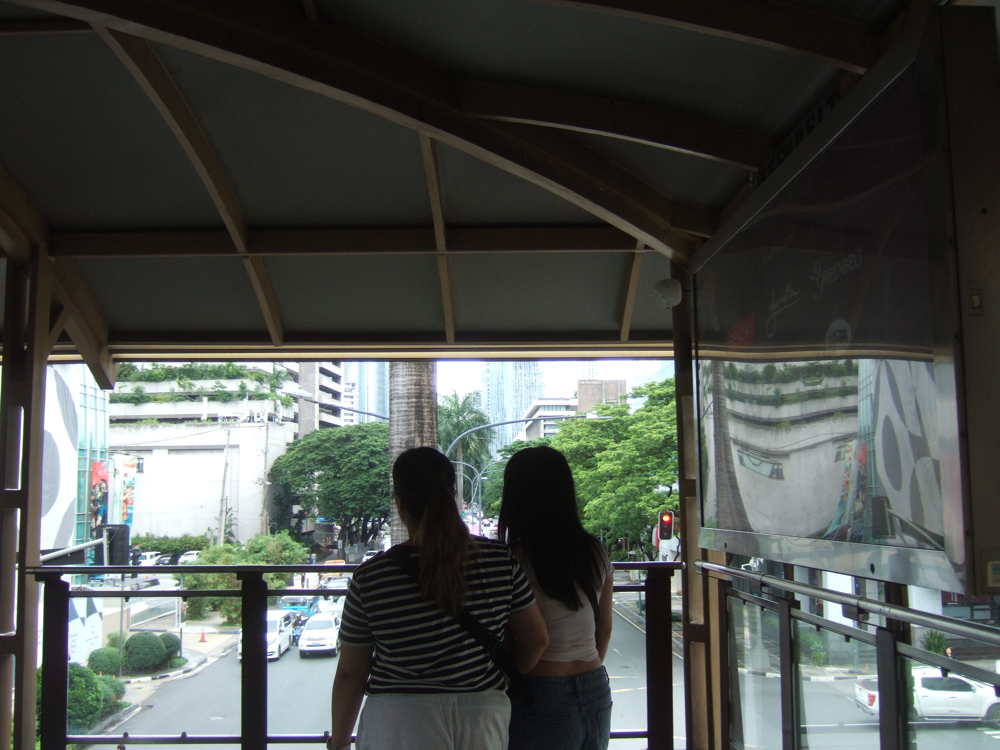

<!DOCTYPE html>
<html lang="en">
<head>
    <meta charset="UTF-8">
    <meta name="viewport" content="width=device-width, initial-scale=1.0">
    <title>PROJECT 002</title>
    <link rel="stylesheet" type="text/css" href="P1 STYLE.css">
    <html>

    
</head>
<body>
    </html>
    </head>
    <body>
        <body>
            <div><container:>
                <div class="navbar">
                    <nav>
                        <ul>
                          <a href="index.html">HOME PAGE</a>
                          <a href="project1.html">PROJECT 001</a>
                          <a href="project2.html">PROJECT 002</a>
                          <a href="project3.html">PROJECT 003</a>
                          <a href="create.html">GALLERY</a>
                        </ul>
                    </nav>
                </div>
    </nav


</body>
</html>

<!DOCTYPE html>
<html>
<head>
<style>
* {
  box-sizing: border-box;
}

body {
  font-family: 'Yantramanav', sans-serif;
  padding: 10px;
  background: #3E3122;
}

.header h1 {
  font-size: 50px;
}

/* Left column */
.leftcolumn {   
  float: left;
  width: 50%;
}

/* Right column */
.rightcolumn {
  float: left;
  width: 50%;
}


/* Responsive layout - when the screen is less than 800px wide, make the two columns stack on top of each other instead of next to each other */
@media screen and (max-width: 800px) {
  .leftcolumn, .rightcolumn {   
    width: 100%;
    padding: 0;
  }
}

/* Responsive layout - when the screen is less than 400px wide, make the navigation links stack on top of each other instead of next to each other */
@media screen and (max-width: 400px) {
  .topnav a {
    float: none;
    width: 100%;
  }
}
</style>
</head>
<body>

<div class="header">
    <h1>PROJECT 002</h1> 
    <h3>JULY - AUGUST, 2023</h3>
    <p> Makati City, Philippines shot on digital camera.</p>


    <div class="scroll-container">
      
      
      
      
      
      
      
      
      
      
      
      
      
      
      
      
      
      
    </div>

    <div class="text">
      <h2>FUJI FINEPIX F10</h2> 
      <h3> This series of photos were shot on a digital camera across my holiday in Makati, Philippines</h3>
      <p> PROJECT 002 continues the story begun by PROJECT 001, with a notable shift in the medium used to
          capture the essence of the journey. The photographic series unfolds against the backdrop of my 
          family's exploration of my father's hometown, using a digital camera for this phase. Each image 
          not only captures visual moments, but also serves as a visual time capsule, preserving the spaces 
          that bore witness to my father's childhood.</p>
        </h2>   </h2> 
        </p> The digital camera lens captures the nuanced details of the places important to my father's childhood,
           providing a new perspective and a contemporary vibrancy to the narrative. As the shutter clicks, it immortalises
          the landmarks, streets, and locations dear to my family. The digital medium introduces a modern aesthetic, allowing 
          for precision and clarity while retaining the authenticity of these places' emotional connections.
        

        
  


    <div class="row">
      <div class="column">
        
        
        
     
      </div>
      <div class="column">
        
        
        
      </div>


